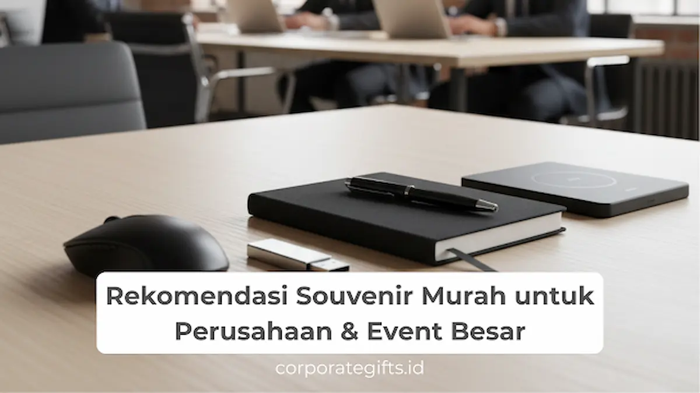

Corporate Gifts ID - Souvenir untuk perusahaan dan event besar adalah merchandise custom seperti tote bag, tumbler, lanyard, dan notebook yang dipilih karena harganya terjangkau namun tetap terlihat profesional. Souvenir jenis ini banyak dipakai pada seminar, pameran, expo, hingga gathering skala besar karena mudah diproduksi massal tanpa mengurangi kualitas branding perusahaan.
Dalam dinamika dunia bisnis modern, kebutuhan memberikan cinderamata tidak pernah surut. Mulai dari konferensi industri, roadshow produk, hingga perayaan hari jadi korporat, kehadiran merchandise promosi menjadi jembatan relasi yang nyata antara brand dan audiens. Banyak perusahaan kini mencari souvenir kantor murah yang tetap terlihat profesional dan elegan. Tantangannya jelas: bagaimana memilih merchandise yang ekonomis secara biaya tetapi tidak menurunkan persepsi mutu atau citra institusi di mata publik.
Di banyak perhelatan akbar korporat, pemilihan merchandise kini tidak hanya terpaku pada kalkulasi harga per unit semata. Tingkat ketahanan pakai, fungsionalitas harian, dan keselarasan estetika dengan identitas visual perusahaan menjadi tolok ukur penentu. Sejumlah korporasi bahkan menerapkan strategi penggabungan souvenir ekonomis dengan corporate merchandise elegan untuk tamu VIP, sehingga tercipta paket hadiah bertingkat yang harmonis dan berkarakter kuat.
Poin Kunci Pengadaan Souvenir Event Besar:
- Efisiensi Skala Ekonomis: Memanfaatkan skala pemesanan di atas 500 hingga ribuan pcs untuk menekan biaya produksi per unit secara signifikan.
- Utamakan Produk Fungsional: Memilih item yang memiliki frekuensi pemakaian berulang (tote bag, lanyard, tumbler, notebook) agar efek eksposur brand berlangsung berbulan-bulan.
- Kualitas Cetak & Presisi Logo: Memastikan teknik sablon atau grafir rapi, tidak mudah mengelupas, serta warna logo sesuai panduan identitas brand (brand guidelines).
- Strategi Tiering Audiens: Mendistribusikan item ekonomis bagi ribuan peserta umum dan menyiapkan executive gift set khusus bagi narasumber serta tamu VVIP.
1. Mengapa Perusahaan Membutuhkan Souvenir Murah namun Berkualitas?
Menyelenggarakan event korporat berkapasitas ratusan hingga ribuan peserta membutuhkan manajemen anggaran yang sangat cermat. Berikut adalah alasan fundamental mengapa pengadaan souvenir ekonomis berkualitas menjadi prioritas strategis manajemen event:
1. Efisiensi Anggaran untuk Event Skala Masif
Saat perusahaan mengadakan acara berskala besar, misalnya seminar nasional dengan 1.000 peserta atau pameran dagang multi-hari, pos pengeluaran cinderamata bisa melonjak drastis. Souvenir murah yang dirancang pintar menjadi pilihan ideal agar total anggaran tetap terkendali tanpa mengorbankan kepuasan para hadirin.
2. Meningkatkan Brand Exposure Berkelanjutan
Souvenir yang ekonomis tetapi fungsional, seperti tas jinjing kanvas atau pulpen promosi, memiliki tingkat interaksi fisik harian yang tinggi. Setiap kali peserta menggunakan tas tersebut di tempat umum atau mencatat dokumen di kantor mereka, logo perusahaan Anda otomatis terpromosikan secara organik tanpa biaya iklan tambahan.
3. Fleksibilitas Universal untuk Berbagai Kalangan Peserta
Merchandise praktis bersifat netral dan universal. Produk seperti lanyard ID card atau tumbler minum dapat diterima dengan antusias oleh peserta dari berbagai jenjang usia, latar belakang profesi, maupun divisi jabatan.
4. Kapasitas Produksi Cepat dan Stok Melimpah
Vendor spesialis corporate gifting umumnya memiliki persediaan bahan baku melimpah dan mesin cetak berkecepatan tinggi. Karakteristik ini sangat krusial dalam mengantisipasi lonjakan peserta mendadak menjelang hari H pelaksanaan acara.

Kombinasi tote bag ramah lingkungan, lanyard sublimasi full colour, dan tumbler custom menjadi paket favorit peserta event perusahaan.
2. 7 Rekomendasi Souvenir Murah yang Tetap Elegan untuk Perusahaan
Agar kesan elegan tetap terpancar kuat di tengah batasan bujet pengadaan, berikut adalah 7 opsi merchandise ekonomis terfavorit yang terbukti sukses di berbagai perhelatan korporat:
1. Tote Bag Spunbond & Blacu Custom
Ringan, ramah lingkungan, dan memiliki bidang cetak luas untuk menonjolkan visual kampanye bisnis Anda. Dengan pemilihan gramasi kain yang tepat dan kombinasi warna kontras, tas jinjing ini langsung memberi kesan profesional sejak peserta pertama kali mendaftar di meja registrasi.
2. Pulpen Custom Metal Look
Pulpen berbahan dasar polimer berkualitas tinggi dengan sentuhan akhir metalik (chrome finish) memberikan bobot dan kemewahan setara pulpen logam mahal, namun dengan biaya yang sangat ramah kantong. Sangat cocok diselipkan ke dalam map seminar atau map konferensi.
3. Gantungan Kunci Akrilik & Karet Rubber
Mudah dibentuk mengikuti kontur logo (custom cutting), memiliki ketahanan air tinggi, dan sangat awet digunakan pada kunci kendaraan atau tas kerja peserta. Biaya produksinya yang terjangkau membuatnya ideal sebagai cinderamata massal.
4. Tumbler Plastik Bebas BPA (BPA-Free)
Menjadi alternatif ekonomis dari tumbler vacuum flask stainless steel. Bobotnya yang ringan dan pilihan warnanya yang cerah sangat digemari pada acara gathering keluarga besar karyawan, lomba olahraga korporat (fun run), maupun workshop lapangan.
5. Notebook Softcover Jilid Jahit / Spiral
Buku catatan berdesain minimalis dengan sampul kraft paper atau art carton laminasi doff. Memberikan pengalaman mencatat yang nyaman bagi peserta seminar, sekaligus menjadi media branding meja kerja yang efektif.
6. Tali Lanyard Cetak Sublimasi Full Colour
Merupakan aksesoris wajib pada konferensi, expo, dan konvensi bisnis. Tali lanyard dengan bahan tisu halus dan teknik cetak sublimasi tahan luntur menampilkan identitas korporat secara tajam dan nyaman dikenakan di leher sepanjang hari.
7. Paket Stiker Decal Vinyl Tahan Air
Memberikan dampak visual kreatif yang digemari kalangan profesional muda. Stiker berbahan vinyl tahan gores ini sering ditempelkan pada penutup laptop, botol minum, atau gawai, memperluas jangkauan visual brand secara organik.
3. Tabel Komparasi Souvenir Event Perusahaan
Untuk mempermudah panitia dan divisi pengadaan (procurement) dalam menentukan alokasi bujet, berikut adalah rangkuman matriks komparasi jenis souvenir event korporat:
| Jenis Souvenir | Estimasi Harga | Keunggulan Utama | Rekomendasi Acara |
|---|---|---|---|
| Tote Bag Spunbond | Rp5.000 - Rp15.000 | Bidang cetak logo besar, ringan, wadah materi event | Seminar, Pameran, Expo B2B |
| Lanyard Sublimasi | Rp8.000 - Rp18.000 | Wajib pakai saat event, cetak 2 sisi full colour | Konferensi, Summit, Festival |
| Pulpen Metal Look | Rp4.000 - Rp10.000 | Tampilan metalik mewah, praktis langsung dipakai | Workshop, Rapat Kerja, FGD |
| Tumbler Plastik BPA-Free | Rp15.000 - Rp35.000 | Fungsional harian, ramah lingkungan, warna menarik | Gathering Tim, Fun Walk, CSR |
| Notebook Softcover | Rp12.000 - Rp25.000 | Estetik, halaman bergaris rapi, media catatan kerja | Pelatihan, Bimtek, Seminar Kit |
4. Tips Memilih Souvenir Murah untuk Event Perusahaan
Mendapatkan cinderamata ekonomis yang tidak terkesan murahan membutuhkan kejelian teknis. Perhatikan panduan praktis berikut saat menyusun pesanan:
- Prioritaskan Kegunaan Nyata: Jangan memesan barang yang sekadar menjadi hiasan sekali buang. Semakin sering barang digunakan oleh peserta dalam aktivitas keseharian mereka, semakin tinggi nilai pengembalian investasi (ROI) promosi Anda.
- Utamakan Mutu Cetak dan Kerapian Finishing: Citra perusahaan dapat tercoreng apabila cat sablon mengelupas atau jahitan tali tidak simetris. Pastikan vendor memiliki rekam jejak percetakan industri berstandar tinggi.
- Sesuaikan Tema dan Karakter Event: Untuk forum akademik atau pelatihan manajerial, paket Paket Seminar Kit berisi pulpen dan notebook adalah opsi paling tepat. Sedangkan untuk acara rekreasional di luar ruangan, botol minum dan topi custom menjadi pilihan paling serasi.
- Terapkan Paket Bundling Cerdas: Daripada membagikan satu jenis barang bernilai tinggi, memadukan tote bag, pulpen, dan gantungan kunci dalam satu paket goodie bag sering kali memberi impresi yang jauh lebih kaya bagi peserta.
5. Manfaat Strategis Souvenir Fungsional bagi Branding Bisnis
Pemberian cinderamata pada dasarnya bukan pemborosan biaya operasional, melainkan instrumen komunikasi pemasaran yang efektif dan terukur. Ketika peserta membawa pulang barang yang bermanfaat, rasa apresiasi emosional terhadap penyelenggara acara akan terbangun secara alami.
Selain memperkuat ikatan hubungan (engagement), barang-barang berlogo perusahaan yang beredar di ruang publik bekerja seperti papan reklame berjalan mini (mobile billboards). Setiap kali rekan kerja atau kolega peserta melihat tote bag atau tumbler berlogo Anda, percakapan seputar reputasi positif perusahaan Anda dapat tercipta dengan sendirinya.
6. Kesimpulan & Solusi Pengadaan Massal
Souvenir murah tidak selalu identik dengan kualitas rendah. Dengan perencanaan konsep yang matang, seleksi material yang fungsional, dan kepatuhan terhadap standar cetak yang presisi, perusahaan Anda tetap dapat menyajikan cinderamata berkelas yang memikat hati para peserta tanpa harus membebani neraca keuangan.
Untuk perhelatan akbar berskala ratusan hingga ribuan orang, memadukan paket souvenir ekonomis bagi audiens reguler dengan cinderamata eksklusif bagi tamu VIP merupakan strategi paling bijak dan efisien. CorporateGifts.ID siap mendampingi kebutuhan pengadaan cinderamata korporat Anda dengan katalog ratusan pilihan merchandise siap custom, harga grosir B2B bersaing, dan jaminan pengiriman tepat waktu ke seluruh Indonesia.
Pertanyaan Seputar Souvenir Event Perusahaan (FAQ)

Ditulis oleh: Sholikhatun Nikmah
Senior Corporate Gifting SpecialistSpesialis pengadaan corporate gift, souvenir promosi event besar, paket seminar kit, dan merchandise institusi di CorporateGifts.ID. Berpengalaman mendampingi ratusan perusahaan nasional dalam merancang merchandise fungsional bernilai branding tinggi.
Lihat Profil Lengkap & Panduan Lainnya